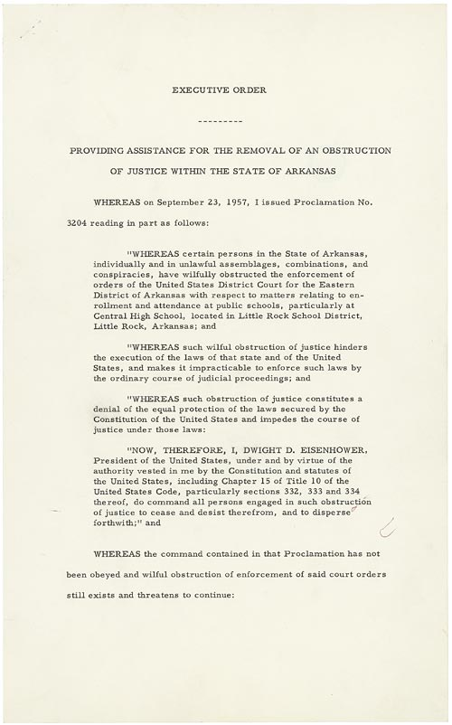

U.S. FOREIGN POLICY / WEEK 09
Nuclear threats, new states, and credibility
- 1953–1960; 1961 retrospective
- Dr. Murat Toman
U.S. FOREIGN POLICY / WEEK 09
The main idea
- Eisenhower’s administration relied heavily on deterrence while managing costs and global commitments. Decolonization and the civil rights struggle complicated claims about freedom and leadership.
- The 1961 farewell address falls just after this week’s main period. It warned about the influence of a large military establishment and defense industry. The speech is useful as a retrospective source. It raises questions about how permanent security commitments affect democratic control.
U.S. FOREIGN POLICY / WEEK 09
Where this week fits in history
| When | Selected event |
|---|---|
| 1947 | Truman Doctrine |
| 1956 | Suez crisis |
| 1964 | Tonkin Gulf Resolution |
U.S. FOREIGN POLICY / WEEK 09
History through a source

- This document is evidence of an official statement or decision. Its wording and appearance help us identify the source, but its promises still need to be checked against evidence of actions and results.
- Use the linked transcription or PDF to read the text. Ask who issued it, what it claims, and whose viewpoint is missing.
U.S. FOREIGN POLICY / WEEK 09
Key words explained
- Deterrence: Trying to stop an action by making its expected costs or risks too high.
- Decolonization: The ending of colonial rule and struggles over what independence will mean.
U.S. FOREIGN POLICY / WEEK 09
Key words explained
- Credibility: How believable an audience considers a promise or threat.
- Military-industrial complex: The relationship between military institutions and industries that supply them.
U.S. FOREIGN POLICY / WEEK 09
Nuclear deterrence promised security at a price
- The New Look sought to maintain security without unlimited spending on conventional forces. Nuclear threats offered one way to discourage an opponent from acting.
- Such threats also created risks of escalation and doubts about whether they would be carried out. A cheaper military posture was not automatically a safer one.
U.S. FOREIGN POLICY / WEEK 09
New states did not simply choose a superpower’s agenda
- Decolonization meant the end of colonial rule and the rise of newly independent states.
- Their leaders and populations pursued their own security, development, and political goals. Viewing every movement only as pro-American or pro-Soviet misses those aims and the continuing effects of empire.
U.S. FOREIGN POLICY / WEEK 09
Suez showed that allies could disagree
- The Suez crisis demonstrates that U.S. power sometimes constrained allies rather than only opponents.
- Shared membership in a broad political camp did not eliminate conflicting interests. To explain a crisis, examine each government’s goals and choices rather than assuming one side acted as a single unit.
U.S. FOREIGN POLICY / WEEK 09
Civil rights affected international credibility
- The struggle at Little Rock concerned enforceable rights and the actions of Black students, families, activists, and officials.
- Foreign audiences also judged U.S. claims about freedom through events at home. Domestic rights were important in themselves, while their treatment also shaped the country’s reputation.
U.S. FOREIGN POLICY / WEEK 09
Eisenhower’s warning looked back on growing institutions
- The 1961 farewell address falls just after this week’s main period. It warned about the influence of a large military establishment and defense industry.
- The speech is useful as a retrospective source. It raises questions about how permanent security commitments affect democratic control.
U.S. FOREIGN POLICY / WEEK 09
Politics at home and abroad
- At home: Defense spending, civil rights, and institutional power shaped security and reputation.
- Abroad: The United States managed nuclear rivalry, alliances, and relations with newly independent states.
- The connection: domestic support and resources affect what leaders can promise abroad. International events can change domestic priorities.
U.S. FOREIGN POLICY / WEEK 09
How power worked
| Form of influence | How it operated in this week |
|---|---|
| Hard power | Nuclear threats, covert operations, and economic pressure sought to change behavior. |
| Soft power | Public diplomacy and claims about freedom depended partly on how domestic rights were protected. |
- Covert success may impose later legitimacy costs; domestic rights performance affects but does not wholly determine reputation.
U.S. FOREIGN POLICY / WEEK 09
A worked explanation
- Does an alliance mean its members agree on every crisis?
- No. Allies can pursue conflicting goals. Suez illustrates why their individual interests and choices must be examined.
- Why this matters: The 1961 farewell address falls just after this week’s main period. It warned about the influence of a large military establishment and defense industry. The speech is useful as a retrospective source. It raises questions about how permanent security commitments affect democratic control.
U.S. FOREIGN POLICY / WEEK 09
Practice with the documents
- Find the action authorized in the Little Rock executive order.
- Find the institutional danger described in the farewell address.
- Explain how protecting rights and controlling institutions connect domestic politics with international credibility.
U.S. FOREIGN POLICY / WEEK 09
How to support an answer
- A claim is what you argue. Evidence is a specific passage, event, or finding that supports it. Explain the connection between them.
- Example structure: “The document claims ____. This suggests ____. It cannot by itself show ____.”
- A speech can establish what a speaker said. Evidence of actions and consequences is needed to judge whether the policy worked.
U.S. FOREIGN POLICY / WEEK 09
What to remember
- An economical strategy may redistribute risk rather than eliminate cost.
- Decolonizing societies pursued objectives not reducible to superpower rivalry.
- Economic coercion is not soft power merely because it is nonmilitary.
- Domestic rights and international legitimacy intersect without making rights merely instrumental.
U.S. FOREIGN POLICY / WEEK 09
Reading guide
- Executive Order 10730: Little Rock (1957) A document from the period. Use it to identify what officials claimed or authorized, then check other evidence for the consequences. External source page; access may vary.
- Eisenhower’s Farewell Address (1961) A document from the period. Use it to identify what officials claimed or authorized, then check other evidence for the consequences. External source page; access may vary.
Executive Order 10730: Little Rock (1957) — External source page; access may vary.
Eisenhower’s Farewell Address (1961) — External source page; access may vary.
U.S. FOREIGN POLICY / WEEK 09
Reading guide
- The Suez Crisis, 1956 A retired historical background essay. Use it for context, and compare its account with scholarship and other perspectives. External source page; access may vary.
- From Colony to Superpower: U.S. Foreign Relations since 1776 A scholarly narrative companion for historical periods. Select the relevant period; no unverified page assignments are supplied. Publisher record; full text may require institutional access.
The Suez Crisis, 1956 — External source page; access may vary.
Office of the Historian Milestones: retired series, retained online for historical reference; not a current-policy source.
From Colony to Superpower: U.S. Foreign Relations since 1776 — Publisher record; full text may require institutional access.
U.S. FOREIGN POLICY / WEEK 09
Reading guide
- The Global Cold War: Third World Interventions and the Making of Our Times Adds a global and intervention-centered perspective to Cold War analysis. Publisher record; full text may require institutional access.
- Cold War Civil Rights: Race and the Image of American Democracy Connects domestic racial politics and international credibility; especially useful for weeks 8–10. Publisher-distributed JSTOR record; full text may require institutional access.
The Global Cold War: Third World Interventions and the Making of Our Times — Publisher record; full text may require institutional access.
Cold War Civil Rights: Race and the Image of American Democracy — Publisher-distributed JSTOR record; full text may require institutional access.
U.S. FOREIGN POLICY / WEEK 09
Video and audio guide
- Inside the Vaults - The Writing of Eisenhower’s “Military-Industrial Complex” Speech Use drafts and delivery excerpts to examine how Eisenhower formulated his warning about military power.
- April 16, 1953: Chance for Peace Analyze the opportunity costs of armament in Eisenhower’s public case for peace.
Inside the Vaults - The Writing of Eisenhower’s “Military-Industrial Complex” Speech — Free provider page; external player may require consent or be region-dependent
3:17 archival short released in 2011; January 1961 address reflects on the 1953–1960 period. Provider page links the video.
April 16, 1953: Chance for Peace — Free provider page; external player may require consent or be region-dependent
Primary-source audio and transcript.
U.S. FOREIGN POLICY / WEEK 09
Using the sources carefully
- Linked readings and media offer particular viewpoints. Compare them with the lesson and other evidence. Some sources require institutional access.
- Media links and descriptions were checked when the course resources were prepared. Full playback was not tested.